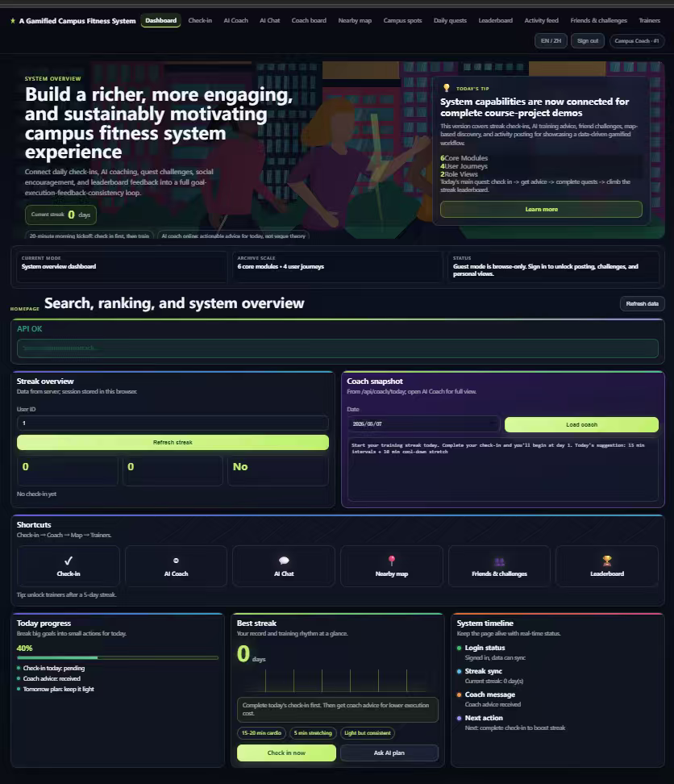

User 1 Feedback:User 1 found the check-in process straightforward and easy to use, and the streak data was clear and intuitive. However, the visual design of the initial pages felt somewhat plain, and the progress feedback for tasks was not very noticeable. In addition, the entry point for the AI coach was not easy to locate.
Suggestion
Suggestion: Improve the visual design with more engaging colors, make task progress more visually prominent, and place key features such as the AI coach on the homepage for easier access.
2
User 2
Feedback
User 2 Feedback:User 2 mentioned that the overall workflow of the system was smooth, with no unnecessary steps. The leaderboard and check-in reward features were particularly appealing. However, there were a few missing elements in the bilingual text, and the interaction process within the social module felt slightly complicated.
Suggestion
Suggestion: Review and complete the bilingual content, simplify the steps for social interactions, and reduce the number of page transitions.
3
User 3
Feedback
User 3 FeedbackUser 3 appreciated the personalized fitness recommendations, finding them useful for guiding workouts. However, the gamification elements in the early stage were not very engaging, and completing tasks did not provide a strong sense of achievement. As a result, long-term motivation might be limited.
Suggestion
Suggestion: Enhance feedback after task completion (e.g., pop-ups or rewards), introduce clearer achievement displays, and improve data visualization to strengthen the user's sense of progress and accomplishment.
Common Findings from User Testing
By analyzing feedback from all three users, several common issues were identified:
The visual design of early pages lacks engagement and needs improvement.
Core features are not always easily discoverable, affecting usability.
Gamification elements are not strong enough to sustain long-term motivation.
Some interaction flows, especially in social modules, are overly complex.
These findings provided clear directions for the next stage of system optimization.
5.2 Iterative Optimization
(Before & After Comparison Screenshots)：
Iterative Optimization Explanation
Based on user testing feedback, several key improvements were implemented:
01
Problem
AI coach entry was difficult to locate
Change
Moved AI coach to the homepage
Result
Improved feature visibility and accessibility
02
Problem
Visual design was too plain
Change
Enhanced color scheme and visual hierarchy
Result
Increased user engagement and visual appeal
03
Problem
Weak sense of achievement after task completion
Change
Added pop-up feedback and reward indicators
Result
Strengthened motivation and user satisfaction
04

Problem
Social interaction steps were complex
Change
Simplified interaction flow and reduced page transitions
Result
Improved usability and efficiency
5.3 Final Reflection (Social Ethics & AI Application Discussion)
In terms of social and ethical significance, this gamified campus fitness system actively responds to the goal of promoting a healthier campus environment and improving college students’ physical well-being. By combining lightweight interaction design with gamification elements, the system encourages users to build long-term exercise habits in a more engaging and sustainable way, helping to address the common issue of low physical activity among students.
Throughout the design process, particular attention was paid to data privacy and ethical considerations. The system follows the principle of minimal data collection and informed consent. All user data is used solely for system functionality and academic purposes, and anonymization techniques are applied to reduce the risk of privacy leakage. These measures ensure that the design aligns with current digital product ethics and user data protection standards.
From the perspective of AI application, the AI coach serves as a core feature by providing personalized fitness recommendations and interactive guidance. This helps address the lack of accessible professional coaching resources on campus and improves the efficiency of delivering tailored exercise advice. In this sense, AI enhances both the scalability and practicality of the system.
However, several limitations should also be acknowledged. Firstly, the current evaluation is based on a relatively small number of users, which may not fully represent the broader student population. Future work should involve larger-scale testing to improve the reliability of findings. Secondly, while AI-generated recommendations are useful, there is a potential risk of over-reliance on automated suggestions. Ensuring the accuracy, safety, and scientific validity of these recommendations remains an important challenge.
In addition, issues such as algorithmic bias and limited personalization depth may affect user experience, especially for individuals with diverse fitness levels or specific needs. Future improvements should focus on enhancing data diversity and continuously optimizing the underlying algorithms to provide more inclusive and reliable support.
Overall, this project demonstrates the potential of integrating AI and gamification into campus fitness systems. At the same time, it highlights the importance of balancing technological innovation with ethical responsibility, ensuring that AI is used as a supportive tool that genuinely benefits users in a safe and human-centered way.
This project also provided valuable experience in bridging UX design and technical implementation, reinforcing the importance of iterative, user-centered development in real-world software engineering projects.